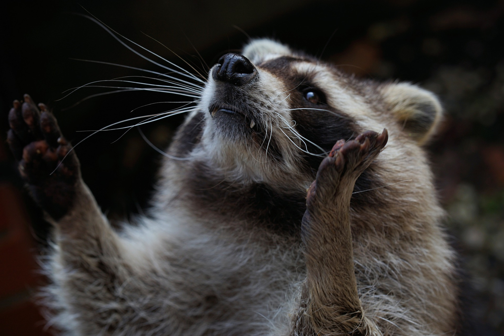
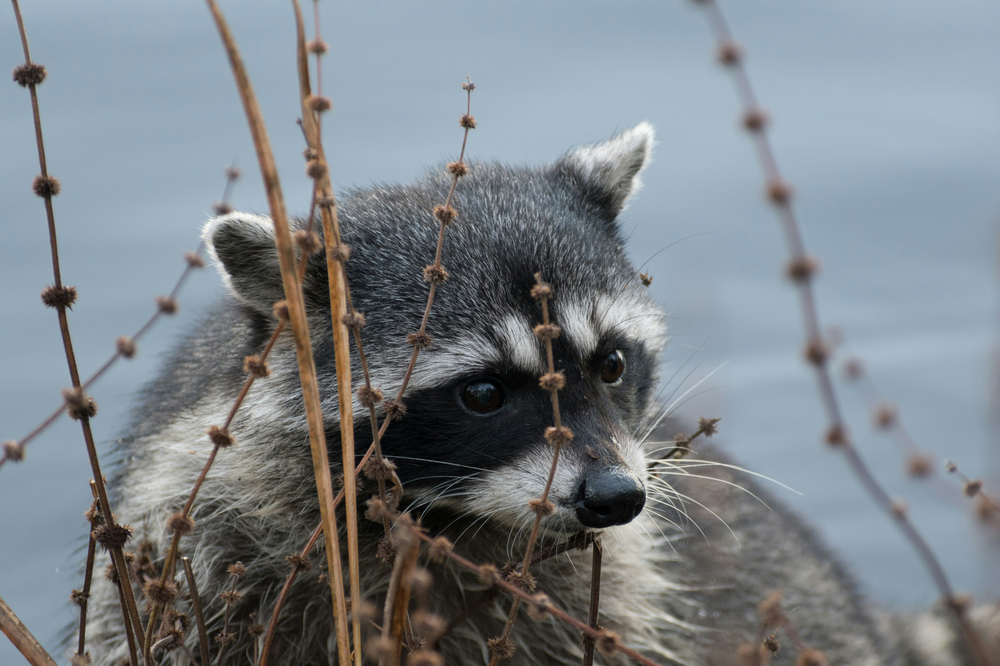
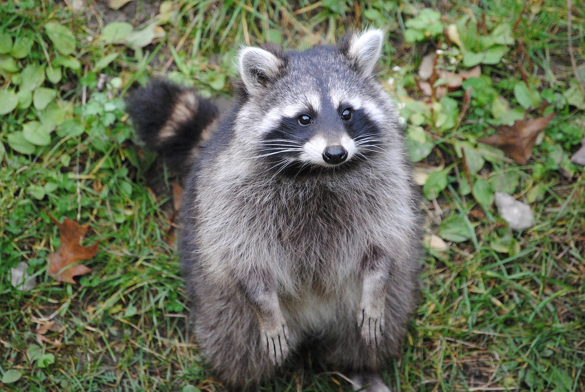

Adopting a raccoon from our raccoon family is an extraordinary opportunity to welcome a charming and intelligent
companion into your life.
Each raccoon in our family possesses a unique personality and boundless curiosity, making them
wonderful additions to any loving home.
Click on each raccoon's photo to view his/her full profile!
Adoption Fees: 350$
Vaccination Fees Vary 100-150$
|  | David | 12 Years | Male | David, the raccoon with a mischievous twinkle in his eye and a heart of gold. Despite his penchant for troublemaking antics, David's endearing charm and sweet disposition have won over the hearts of all who know him. From raiding the pantry for snacks to turning household objects into toys, there's never a dull moment with David around. |
|
Deeno | 10 Years | Male | Deeno, the intrepid explorer of the raccoon world. With a boundless curiosity and an insatiable thirst for adventure, Deeno's zest for exploration knows no bounds. With each new discovery, his eyes sparkle with excitement, and his inquisitive nature leads him on daring escapades through forests, parks, and urban landscapes alike. |  | Bandit | 14 Years | Male | Bandit, the devoted family raccoon whose heart belongs to his beloved clan. With a deep sense of loyalty and an unwavering affection for his kin, Bandit's greatest joy comes from spending time with his family. Whether they're foraging for food, playing games in the moonlit night, or simply cuddling together in their cozy den, Bandit cherishes every moment shared with his loved ones. |
|
Violet | 10 weeks | Female | Violet, the spirited baby girl raccoon whose curiosity knows no bounds. With twinkling eyes and a playful bounce in her step, Violet delights in exploring the world around her. From chasing fireflies in the moonlit forest to scampering through tall grass in search of hidden treasures, there's no adventure too big or small for this fearless explorer. |  | Dexter | 18 Years | Male | Dexter, the raccoon with a heart as big as the night sky and a spirit that shines brighter than the stars. From the moment he was born, it was clear that Dexter was a little different from his siblings. With his unique markings and gentle demeanor, he quickly captured the hearts of all who met him. While Dexter may not be the fastest or the strongest, his special qualities lie in his boundless kindness, unwavering optimism, and innate ability to bring joy to those around him. |